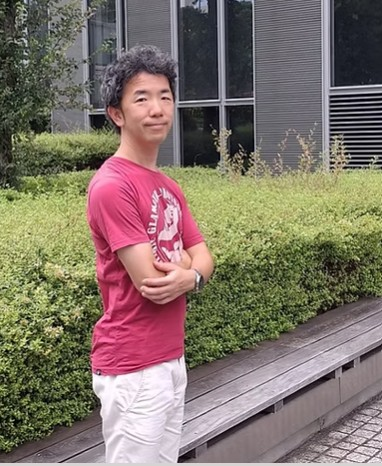

理念
その人のベストな状態へと導くサポート
どのようなリハビリが必要か、20年以上の経験に基づき、
様々な疾患や症状に対して最適なリハビリを提供します。

たとえ障害や疾患があっても自分のやりたいことができるように！

20年以上の豊富な臨床経験
略歴
- 2004年 作業療法士資格取得
- 小平緑成会病院 5年間勤務
- 清川病院 リハビリテーション科科長経験者 2年担当
- 2014年～ 訪問看護ステーション勤務
- 2021年～ 東中野リハビリ 開業
リハビリ案内
訪問リハビリのため、理学療法士、作業療法士関係なくほとんどのリハビリを提供します。
一人ひとりの症状に合わせた様々なリハビリ
機能訓練・動作訓練
正しい動作、バランス、感覚、関節の動き、筋力を改善。自己流になってしまった動作を修正します。
麻痺の訓練（脳卒中など）
動きを取り戻す随意性訓練、感覚訓練、体の使い方の練習など、麻痺側に意識を向け動く訓練を行います。
痛みの治療（膝・腰・肩など）
筋肉、関節、脳の誤認識、精神的影響など、痛みの原因を究明し、根本的な改善を図ります。
歩行訓練（特化）
特に力を入れている分野です。40歳を過ぎたら修正が必要となる歩行能力を修正し、転びにくい体へ。
高次脳機能訓練
脳卒中や認知症などによる注意障害、失認症などを理解し、改善・事故防止を目指します。
オンライン指導（相談）
遠方でお伺いできないお宅へ、チャットやzoomによるリハビリ指導、助言も行っています。
利用料金
リハビリ費用
| 週一回（60分） | 12,000円 / 回 |
|---|---|
| 週一回（40分） | 9,000円 / 回 |
| 隔週一回（60分） | 12,000円 / 回 |
| 隔週一回（40分） | 9,000円 / 回 |
リモート・ご相談
| ウェブでのリモートリハビリ | ご対応可能です |
|---|---|
| 電話・メールでのリハビリ相談 | 1回 3,000円程度 （チャット20分程度の料金） |
※上記は中野区、新宿区、杉並区周辺の料金となります。東中野から片道30分圏内は追加料金なしです。
※リハビリ時間はご相談にて曜日・時間を決定します。
※遠方の場合も可能ですが、別途移動時間分のリハビリ料金が発生します。（往復30分毎に2,500円）
※開始前にはメール、電話での無料相談もお受けします。
リハビリ開始までの流れ
専門職の方へ
臨床経験に基づいた専門的な情報
リハビリテーション科科長としての経験、訪問リハビリでの経験に基づき、ADL訓練、座位保持、バランス機能、感覚訓練、筋緊張、運動イメージなど、専門的な視点からの解説・リハビリを提供します。チャット、Zoomによる指導や助言も行っています。
- ADL訓練
- 座位、座位バランス
- バランス機能
- 感覚訓練
- 筋緊張
- 運動イメージ
- 動作訓練
- 協調性
- 歩行訓練
- 認知症患者へのアプローチ
無料体験・相談
「どのような体の状態で、どのようなリハビリが必要か？」、費用のことなど、何でもお問い合わせください。
無料体験、メール相談も受け付けています.
お電話・メールでのお問い合わせ
FAX: 03-3361-3762
E-mail: akitoshiriha1@gmail.com
訪問エリア：中野区・杉並区・新宿区周辺